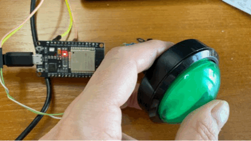

🌶️ - Press a button and light a LED
Shows how to use the System.Device.Gpio API to set GPIO pins.
We will use the embedded LED present on the board for this case. You can also use an external LED with the 100-ohm resistor. You can follow the following schema. For the button, we will use the pin 25 but you can use almost any you want:

And if you want to know more about GPIO, how this works, you can read the All what you've always wanted to know about GPIO content!
If you want to recreate the sample yourself, you'll just need to make sure that once you create a blank .NET nanoFramework application, you'll need to add the following NuGet package:
Running the sample
Ensure you have all the software requirements.
To build the sample, follow the section here. And to run it, here.
The sample is located here. The code is very straightforward with the explanations:
using System.Device.Gpio;
using System.Diagnostics;
using System.Threading;
Debug.WriteLine("Hello from nanoFramework!");
// Create a GpioController, then create a GpioPin for the led and the button
var gpio = new GpioController();
// Setup the GPIO pin to 2 as it is the embedded led in the ESP32
// Open the pin in output mode
// If your board has another pin, change here. If you are using an external led, change here as well.
GpioPin led = gpio.OpenPin(2, PinMode.Output);
// Create the button with input pull up mode
// Adjust the pin number if needed
GpioPin button = gpio.OpenPin(25, PinMode.InputPullUp);
// We want to set an event on the pin when the button is pressed or released
button.ValueChanged += (s, e) =>
{
// When we press the button, the as we have the pin connected to a pull up, the initial value is high,
// and when we press it, the value goes to the ground. So, the even is falling when we press.
Debug.WriteLine($"Button is {(e.ChangeType == PinEventTypes.Falling ? "pressed" : "released")}");
if (e.ChangeType == PinEventTypes.Falling)
{
// light the led
led.Write(PinValue.High);
}
else
{
// switch off the led
led.Write(PinValue.Low);
}
};
Thread.Sleep(Timeout.Infinite);
And as a result, you will see:

If you want to debug, follow the instructions explained in the led sample.